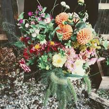

Against the Grain Community

Little Sisters Farm is a family-run micro farm in Connecticut dedicated to growing chemical-free seasonal flowers, small-batch herbal teas, and botanical home care products with care and intentionality. Committed to sustainable, land-conscious agriculture, the farm harvests directly from its own Connecticut soil and offers its products to home consumers, event planners, florists, and wholesale partners throughout the region. Through their deep respect for the land and local community, Little Sisters Farm models a vision of farming grounded in ecological stewardship and meaningful connection to the natural world.
En españolLittle Sisters Farm es una micro-granja familiar en Connecticut dedicada a cultivar flores de temporada sin productos químicos, tés de hierbas en pequeños lotes y productos botánicos para el hogar con cuidado e intencionalidad. Comprometida con una agricultura sostenible y consciente de la tierra, la granja cosecha directamente de su propio suelo en Connecticut y ofrece sus productos a consumidores domésticos, organizadores de eventos, floristas y socios mayoristas en toda la región. A través de su profundo respeto por la tierra y la comunidad local, Little Sisters Farm representa una visión de la agricultura fundamentada en la gestión ecológica y la conexión significativa con el mundo natural.
Visit Website